CASE STUDY · GLOBAL SCHOOLS GROUP · EDUCATION · 2026
GSG25: one story, told three ways.
Global Schools Group opened its first campus in Singapore on 18 September 2002. For its 25th anniversary I wrote the book, the exhibition and the banners, and designed and built the site, so the story reads the same on paper, on the walls and online.
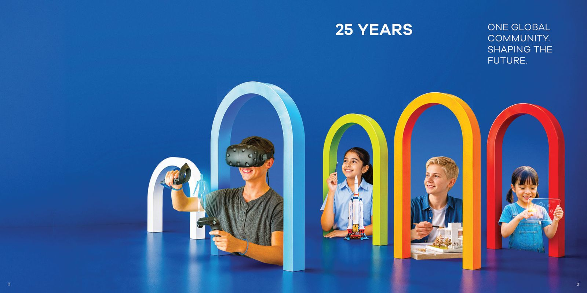
FIG. 01 · THE GSG25 BOOK · 109 PAGES
01 / THE NETWORK
Global Schools Group
First campus: Singapore, 18 September 2002 · 64 campuses · 11 countries · 45,000 students.
02 / ROLE
Writer, designer, developer and project manager
03 / MY SCOPE
All the copy for the book, the exhibition and the banners; the microsite's copy, design and build; and project management for the content and the site. The book's page layouts and the exhibition and banner designs were by Motion's designers.
Twenty-five years, one voice.
By 2026 the group ran 64 campuses in 11 countries. Some schools grew up inside it; others joined recently with their own names and histories.
An anniversary told as a founder's story would put every other school in a supporting role. The job was to celebrate the network without flattening the schools in it, for parents, alumni and staff across very different markets.
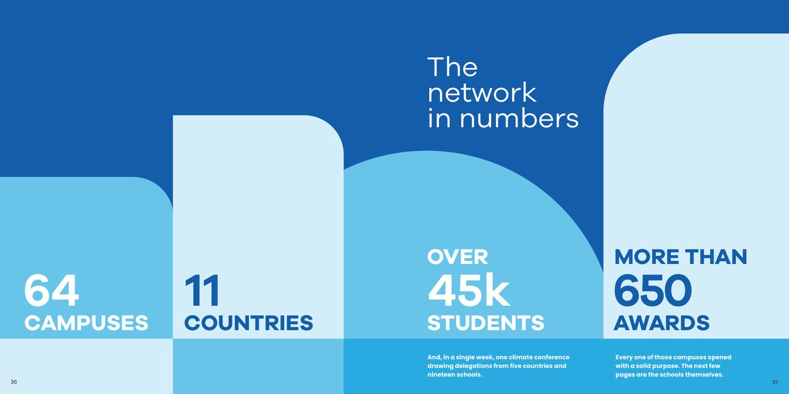
Organised by idea, not by year.
The book runs to 109 pages in five chapters: For Every Child, The Living Network, How Children Learn, The Community Connection, and The Lives That Are Shaped, closing with an essay on the next 25 years.
Themes let a school that joined in 2023 sit beside one from 2002 on equal terms. The chronology still lives in the book, on one timeline spread, where it does its job without running the whole story.

CHAPTER 1
For Every Child

CHAPTER 3
How Children Learn

TIMELINE SPREAD
Marking every milestone, 2002 to 2026
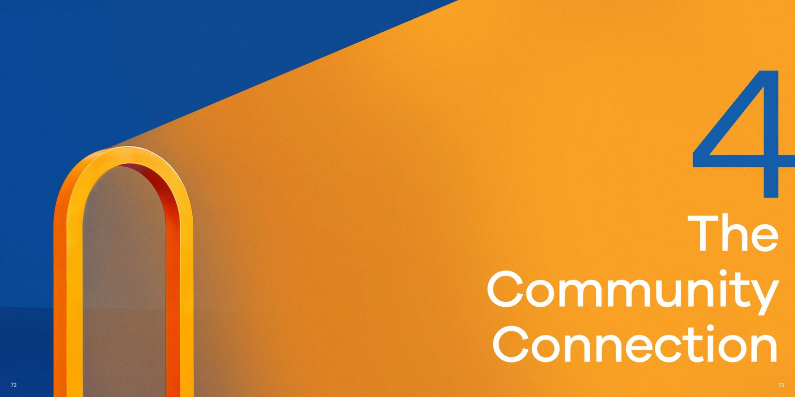
CHAPTER 4
The Community Connection
“The first 25 years answered whether it could be done.”
From the closing essay, The Next 25
The book, walked through.
On 18 September 2026, the group's founding date, the story moved off the page and into a room: five zones of freestanding panels, a lit cube of student stories and an arch to walk through.
I wrote every panel and every banner; Motion's designers designed them. Each zone takes one of the book's ideas and gives it a wall, with a headline a visitor can take in from across the room and a short text for anyone who stops. Someone who walks the room has followed the book's argument without opening it.
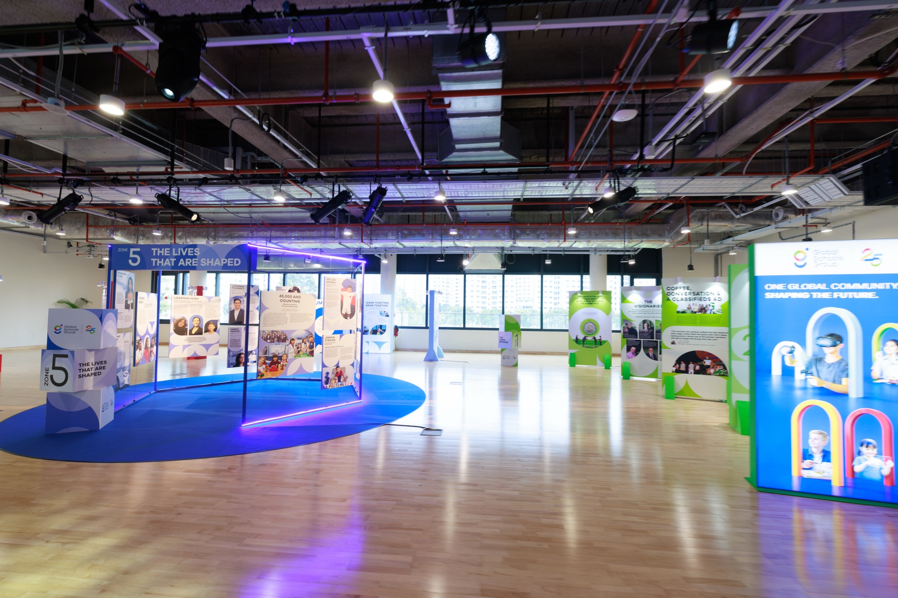
INSTALLATION VIEW
Five zones, a lit cube of student stories and an arch
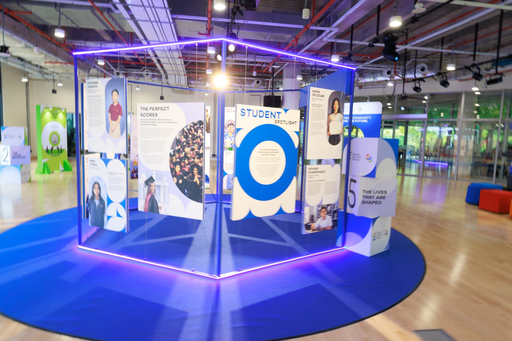
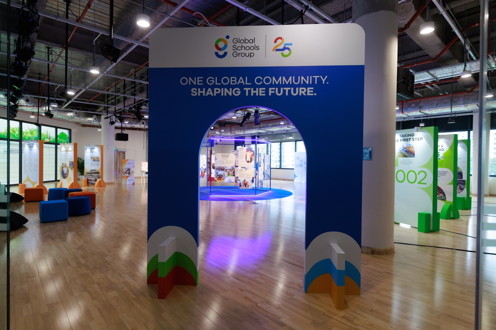
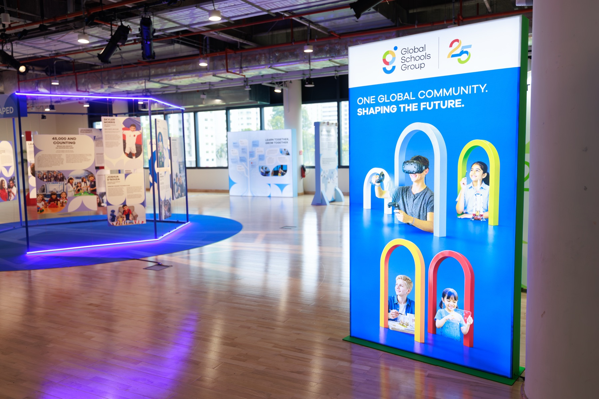
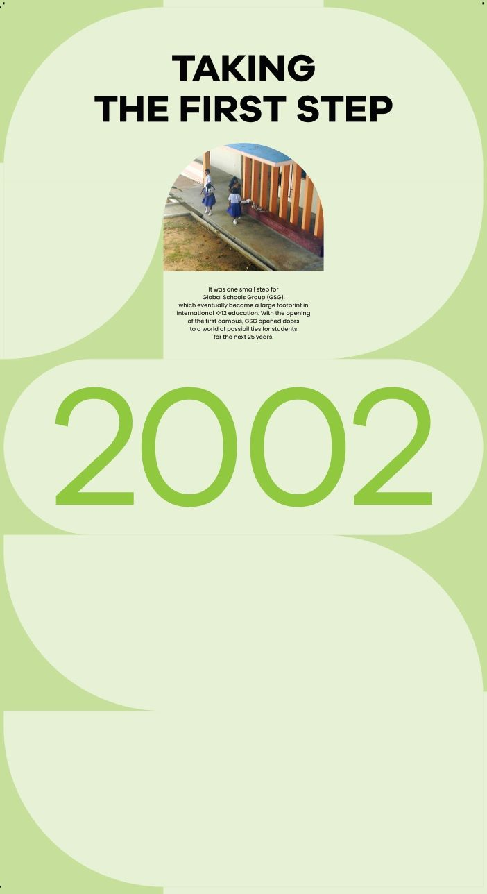
Taking the first step, 2002
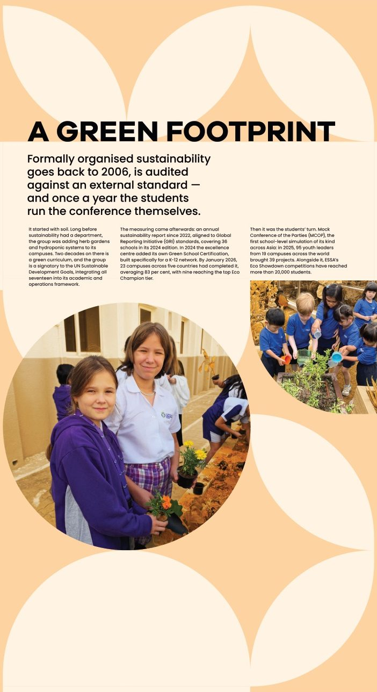
A green footprint
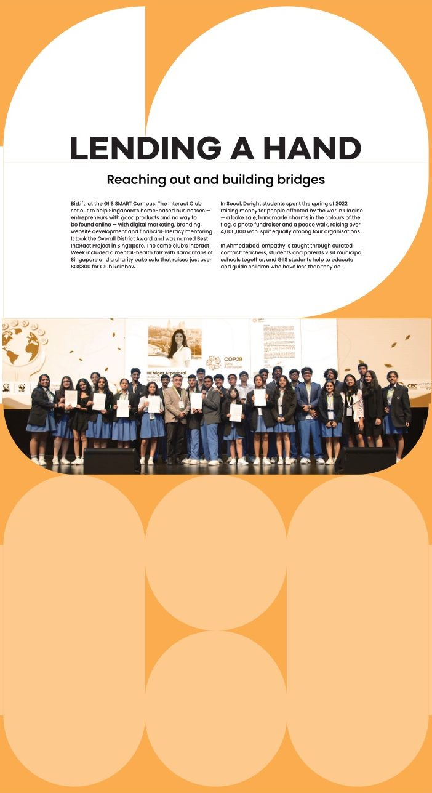
Lending a hand
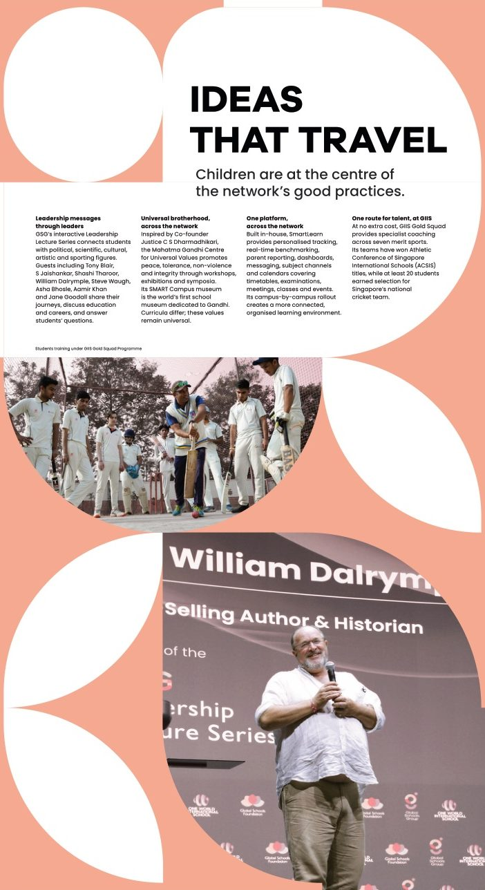
Ideas that travel
A timeline that draws the map.
The centre of the site is 25 years of firsts. As you scroll the years, a map beside them fills in country by country, with a live count of the countries the group has reached.
Around it sit the chairman's letter, the six visionaries in an expanding portrait row, an archive of the group's own photographs filtered by era, and video messages recorded for the anniversary.
25 years of firsts
The timeline and the map fill in together as you scroll.
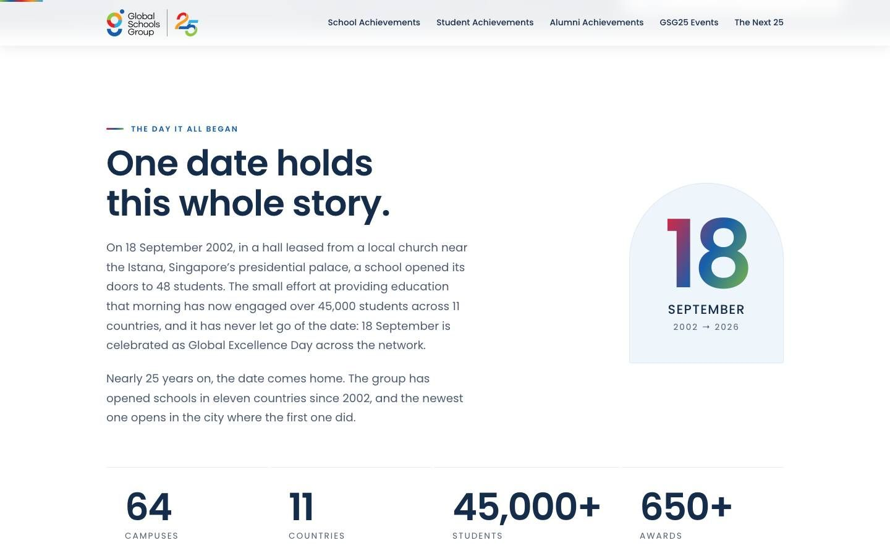
One date holds this whole story
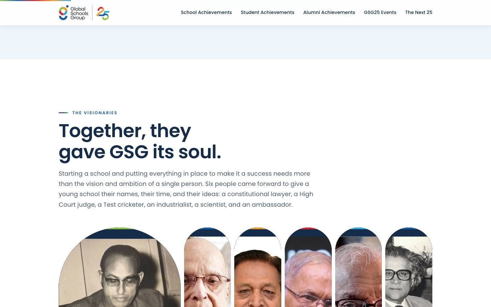
The six visionaries
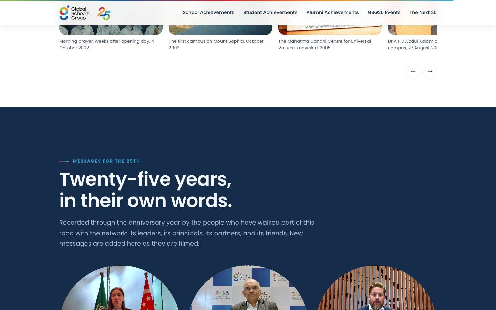
The archive, filtered by era
The same story, in every format.
The letter, the founders and the founding date appear in the book, on the walls and on the site, in the same words. A parent who walks the exhibition, takes the book home and then opens the site meets one voice throughout, and the site keeps collecting messages long after the book went to print.
Running the content and the build as one project is what kept it that way.
WHO DID WHAT
The book
The exhibition and banners
The microsite
Content and site
“One global community. Shaping the future.”
The line on the arch and the banners